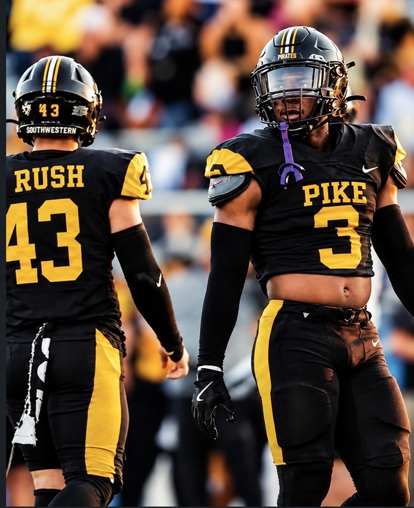
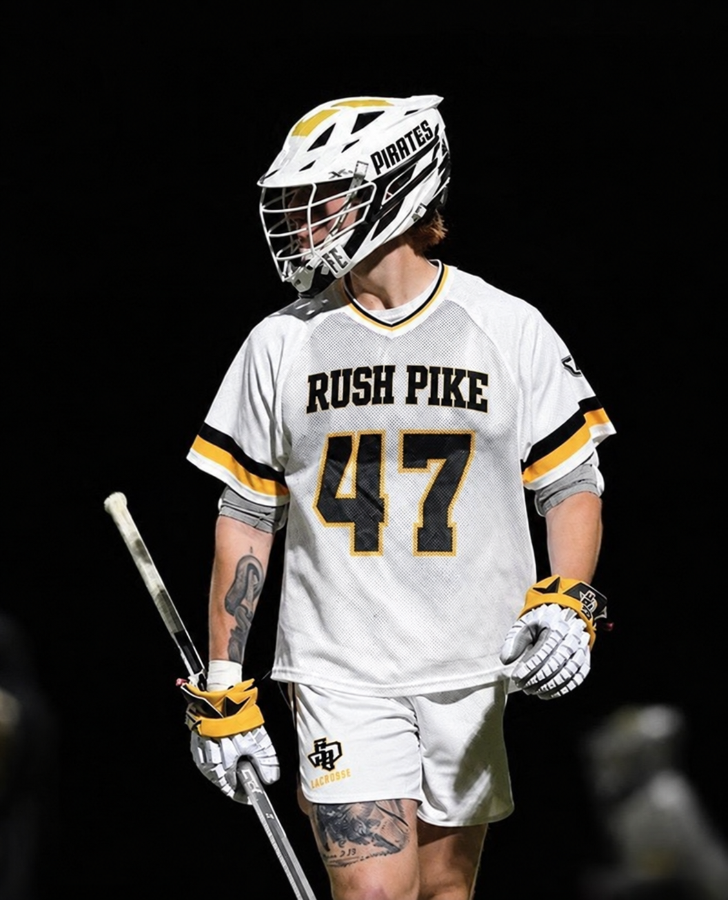
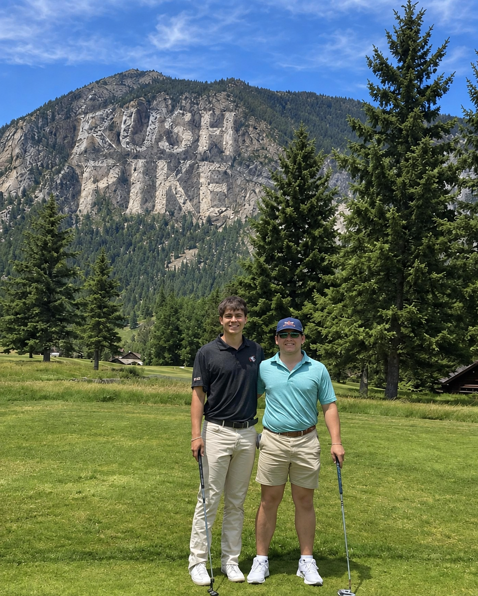
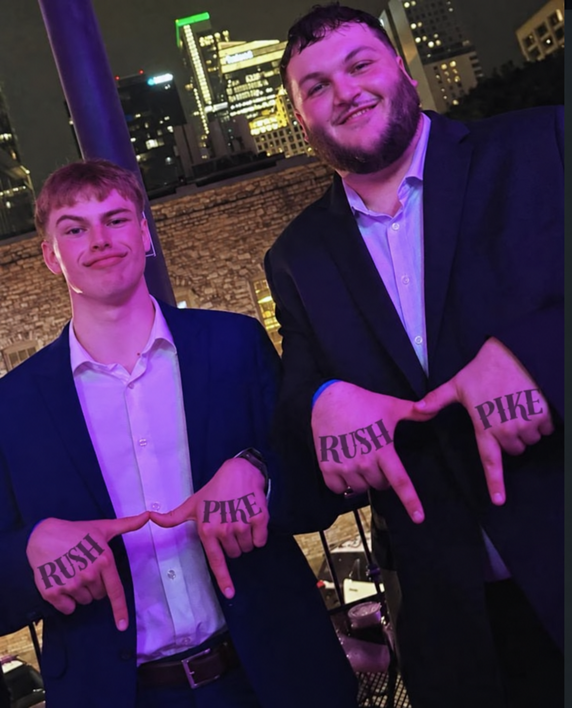
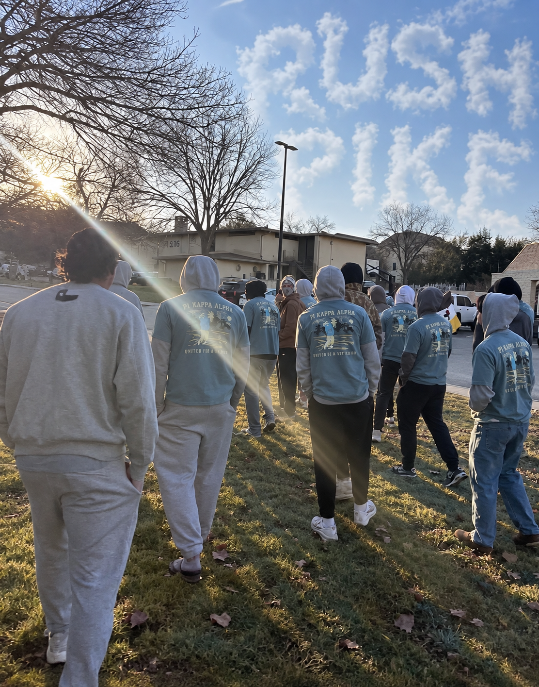
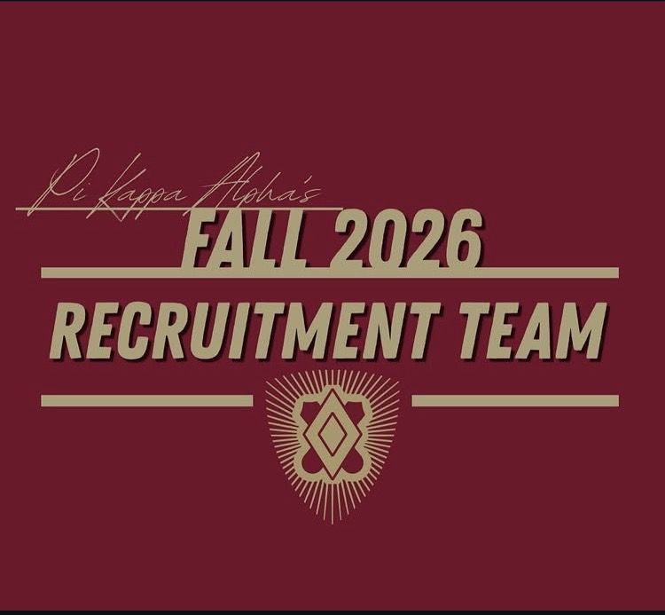

Rush PIKE
Fall 2026 Recruitment
Meet Alpha Omicron, learn what membership offers, and connect directly with the recruitment contact for your area.
Why Rush PIKE
More than four years.
Build friendships, compete together, serve Georgetown, and become part of a brotherhood that continues beyond college.






The Recruitment Team
Find your contact.
Contact Bobby Strauss and the chapter-wide team, or speak with the member assigned to Dallas, Austin, San Antonio, Houston, or out-of-state recruitment.